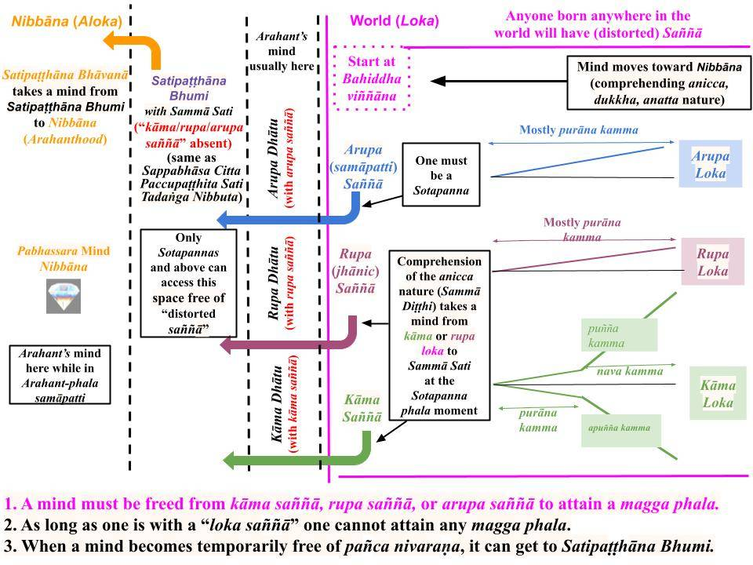

The path to Nibbāna can be divided into four main parts. First, one must get rid of the ten types of wrong views. This allows the mind to grasp the essence of Buddha's worldview and become a Sotapanna. Then, one must overcome the "built-in distorted saññā" to dissociate from kāma loka first and then from rupa and arupa loka.
February 16, 2025
Path to Nibbāna
1. The path to Nibbāna can be separated into four steps or sequential achievements.
- Removing the ten types of wrong views (micchā diṭṭhi): Buddha's worldview vastly differs from any other religious or scientific/philosophical worldview. The cornerstones of Buddha's worldview are that one's actions (with greed, anger, or ignorance of the "Buddha's worldview") will have consequences in future rebirths. Thus, the first part of the process is to understand the validity of the laws of kamma and the rebirth process. Those are the foundations of Buddha's teachings. See "Moral Living and Fundamentals."
- Removal of sakkāya diṭṭhi: Once those foundational aspects are understood, one has the background to understand the meaning of the first Noble Truth of Suffering: that there is unimaginable suffering in the rebirth process, but it can be overcome. Here, one will comprehend that the cause of future suffering is the attachment to "sensory pleasures." When that sinks into the mind, one attains the first stage of Nibbāna, i.e., one becomes a Sotapanna. At this point, the possibility of rebirth in the lowest four realms will be nullified by breaking three mental bonds (saṁyojana) to the rebirth process. This is where "Sammā Sati" (or the "Satipaṭṭhāna Bhumi" in the following chart) is accessed for the first time. Then, one can start on the last two steps by accessing the Satipaṭṭhāna Bhumi and engaging in Vipassanā meditation or Satipaṭṭhāna.
- Overcome "distorted saññā" for kāma rāga: This requires comprehending that "sensory pleasures" are an illusion arising via Paṭicca Samuppāda. That allows a mind to become free of the kāma loka (including the human and six Deva realms.) By this time, one would have attained the Sakadāgāmi and Anāgāmi stages of Nibbāna.
- Overcome "distorted saññā" for rupa and arupa rāga: The fourth step is to comprehend that "jhānic pleasures" in rupa loka and the "samāpatti pleasures" in arupa loka are also illusions; once that is done, one completely separates from the "world of 31 realms" (kāma, rupa, and arupa loka) at the Arahant stage of Nibbāna. All future suffering will end at the death of the Arahant.

Download/Print: “Distorted Saññā, Loka, and Nibbāna“
- Let us go through an overview to connect to the summary in #1 above.
Removing Ten Types of Wrong Views (Micchā Diṭṭhi)
2. As we can see from the chart, Nibbāna is about stopping the rebirth process. Thus, if someone believes that life ends with the death of the current physical body we have, then there is nothing else to do to "pursue Nibbāna." Those with that belief ("uccheda diṭṭhi"), in essence, are saying that one will attain Nibbāna upon the death of the physical body, i.e., all suffering will end.
- With that "wrong worldview," one could be tempted to engage in immoral actions to fulfill one's cravings/desires. If one's immoral actions do not lead to consequences in future lives (and one can avoid the law enforcement), why not do "whatever it takes" to fulfill one's cravings?
- Under normal conditions, such temptations are restrained by an innate sense of morality common to all humans. A human birth is rare and comes with a "built-in" set of restraints. In particular, "hiri" (shame of immoral deeds) and otappa (fear of the consequences of immoral deeds) are built into human consciousness.
- The problem is that a human mind can overcome those "moral qualities" if the temptations become too strong. Thus, a "tipping over" event can happen, and any puthujjana (no matter how moral life he/she lives) is capable of doing an apāyagāmi deed.
- This is why having the ten types of micchā diṭṭhi is dangerous, according to Buddha's teachings.
3. The other extreme view (compared to the uccheda diṭṭhi) is sassata diṭṭhi. This is the view of a "permanent existence" in a Deva or a Brahma realm.
- Sassata diṭṭhi is a better than uccheda diṭṭhi because it requires understanding that one's actions will have consequences, i.e., one believes in the laws of kamma.
- However, as we can see from the above chart, that view also keeps one trapped in the rebirth process.
Sekha Bala - Five Powers of a Trainee
4. In the "Sekhabalavagga" of Aṅguttara Nikāya, a series of ten suttās discuss the "five powers" of a trainee or sekha (striving to attain Nibbāna.) These five, when cultivated simultaneously, can make permanent change in morality.
- In the first sutta, "Saṅkhitta Sutta (AN 5.1)" they are listed: Saddhā bala, hirī bala, ottappa bala, vīriya bala, paññā bala.
- The second sutta in the series,"Vitthata Sutta (AN 5.2)," discusses them in some detail: Saddhā means to have faith in Buddha's teachings (‘itipi so bhagavā arahaṁ sammāsambuddho vijjācaraṇasampanno sugato lokavidū anuttaro purisadammasārathi satthā devamanussānaṁ buddho bhagavā’ti.") Hiri means to have a sense of moral shame, i.e., to be ashamed of bodily, verbal, and mental misconduct ("Idha, bhikkhave, ariyasāvako hirīmā hoti, hirīyati kāyaduccaritena vacīduccaritena manoduccaritena, hirīyati pāpakānaṁ akusalānaṁ dhammānaṁ samāpattiyā.") Ottappa means to have fear/dread of such immoral deeds ("Idha, bhikkhave, ariyasāvako ottappī hoti, ottappati kāyaduccaritena vacīduccaritena manoduccaritena, ottappati pāpakānaṁ akusalānaṁ dhammānaṁ samāpattiyā.") Viriya means to be energetic to sustain hiri and otappa and avoid such immoral deeds ("Idha, bhikkhave, ariyasāvako āraddhavīriyo viharati akusalānaṁ dhammānaṁ pahānāya, kusalānaṁ dhammānaṁ upasampadāya, thāmavā daḷhaparakkamo anikkhittadhuro kusalesu dhammesu."). Paññā is to cultivate wisdom by learning Buddha's teachings ("Idha, bhikkhave, ariyasāvako paññavā hoti udayatthagāminiyā paññāya samannāgato ariyāya nibbedhikāya sammā dukkhakkhayagāminiyā.").
- The concepts are better explained in the following translation: "5.2. In Detail."
5. In the "Yathābhata Sutta (AN 5.4)" it is stated that one without those powers is likely to be reborn in an apaya/niraya: "Imehi kho, bhikkhave, pañcahi dhammehi samannāgato bhikkhu yathābhataṁ nikkhitto evaṁ niraye." One could lose the naturally built-in hiri and otappa by associating with immoral people (asappurisa).
- On the other hand, someone with those five powers is likely to be reborn in a "good realm": "Pañcahi, bhikkhave, dhammehi samannāgato bhikkhu yathābhataṁ nikkhitto evaṁ sagge.."
- In the "Ananussuta Sutta (AN 5.11)," the Buddha says he discovered those "previously unknown" five powers that helped him attain the Buddhahood and those are powers of a Buddha: “Pubbāhaṁ, bhikkhave, ananussutesu dhammesu abhiññāvosānapāramippatto paṭijānāmi. Pañcimāni, bhikkhave, tathāgatassa tathāgatabalāni, yehi balehi samannāgato tathāgato āsabhaṁ ṭhānaṁ paṭijānāti, parisāsu sīhanādaṁ nadati, brahmacakkaṁ pavatteti."
- A good translation: "5.11. Not Heard Before."
Hiri and Otappa Turn to Sati and Samādhi at Sotapanna Stage
6. A puthujjana cultivates those "five powers of a trainee" (sekha bala) while eliminating the ten types of micchā diṭṭhi. That will help removing both uccheda and sassata ditthis.
- Getting rid of all those ditthis (wrong views) makes a mind conducive to grasp the teachings of a Buddha. Of course, one must be exposed to the true teachings of the Buddha by a sappurisa (Noble Person or Ariya.)
- Then, one attains a "trace of sati and (corresponding) samādhi" at the Sotapanna phala moment.
- At that point, the transition from saddhā bala, hirī bala, ottappa bala, vīriya bala, paññā bala to saddhā bala, vīriya bala, sati bala, samādhi bala, paññā bala (listed in "Saṅkhitta Sutta (AN 5.13)" and explained in "Vitthata Sutta (AN 5.14)") is initiated.
- The transition is finalized at the Arahant stage when a sekha becomes an Arahant with complete five powers of saddhā bala, vīriya bala, sati bala, samādhi bala, paññā bala.
- That requires the cultivation of Satipatthana to overcome the "distorted saññā of worldly pleasures."
One Definite Way to Nibbāna - Satipaṭṭhāna
7. The Buddha described the same concepts in many different ways. The Four Noble Truths and the Noble Eightfold Path are automatically fulfilled with the cultivation of Satipaṭṭhāna. In the current series of posts on the “Worldview of the Buddha” we will focus on Satipaṭṭhāna.
- As the "Mahāsatipaṭṭhāna Sutta (DN 28)" the Buddha stated, “Ekāyano ayaṁ, bhikkhave, maggo sattānaṁ visuddhiyā, sokaparidevānaṁ samatikkamāya dukkhadomanassānaṁ atthaṅgamāya ñāyassa adhigamāya nibbānassa sacchikiriyāya, yadidaṁ cattāro satipaṭṭhānā" OR "cultivation of satipaṭṭhāna is a one definite way to attian Nibbāna. "
- As summarized above, the cultivation of Satipaṭṭhāna requires a basic background in #1 (i) above. The next step of removing sakkāya diṭṭhi requires learning the "worldview of the Buddha." The last two steps require understanding that "distorted saññā" is the root cause of attachments (taṇhā/upādāna) for wordlly pleasures. All three steps can be covered by fully understanding the "big picture" in the chart above.
- I compiled that chart based on my efforts over the past two to three years based on what I learned from Waharaka Thero and others; I am grateful to all of them. Even though I may have to make some minor revisions (our understanding grows with time), I am fairly confident it captures the essential elements. As we proceed, I will use this chart repeatedly.
Setting the Background
8. The above worldview of the Buddha can be explained in simple terms as follows.
- The common name for any living being who is not a Noble Person (i.e., one with a magga phala at or above the Sotapanna stage) is "sattā." Thus, an animal, a human, a Deva, or a Brahma (who has not attained a magga phala) is a sattā. The word "puthujjana" ("general population in the world, a country, or a given region") is used for sattās in the human realm.
- A sattā is born in a given realm because it had craved "sensory pleasures" valued in that realm as a human in a previous existence.
- That last statement requires some explanation. Two specific points need to be discussed: (i) In most cases, kammic energies to "power" any existence (i.e., rebirth in any realm) are acquired while in the human realm. However, sattās in Deva and Brahma realms can attain magga phala. (ii) Sattās in different realms have different cravings based on the types of "distorted saññā" associated with them; see "Sotapanna Stage via Understanding Perception (Saññā)." A human would not crave eating grass (like a cow) or eating feces (like a pig), but that "craving" is manifested via specific types of "immoral actions" (kamma) done by humans.
- Let us discuss those two issues.
Most Kammic Energies Acquired While in the Human Realm
9. As discussed in the Aggañña Sutta, most of the sattās in our world system based on the Earth will be in the human realm at the beginning of a "world cycle." See "Aggañña Sutta Discussion – Introduction" and "Buddhism and Evolution – Aggañña Sutta (DN 27)."
- Those "early humans" did not have dense physical bodies like ours; they were called "Brahma-kāyika humans" because they had "invisible bodies" (manomaya kāya or gandhabba kāya). They also had relatively undefiled minds (like those of Brahmās).
- With time, after many millions of years, their "human gati" started emerging, and many started generating defiled thoughts and engaging in immoral activities. Then, their bodies get denser, and they require physical food to eat. Vegetation appears, and some of those humans start getting animal births. As immorality grows, even lower realms (apāyās) are populated. Those reborn in lower realms have very little chance of "coming out" and being reborn in a "good realm" until the end of that Mahā Kappa ("world cycle")
- Of course, some with "better gati" cultivate puñña kamma and are reborn in Deva realms. Some cultivate jhāna and are reborn in Brahma realms. Thus, the initial population of "Brahma-kāyika humans" spread out among the other realms. These days, we have only a minute fraction of humans compared to sattās in other realms.
- Thus, a given sattā (living being) accumulates significant kammic energies mostly when born in the human realm.
Sattās in different realms have different Types of "Distorted Saññā"
10. The same living being (sattā) has different types of cravings (i.e., "upādāna") because, while in the human realm, they had generated corresponding (abhi) saṅkhāra. Another way to say that is to say they had done corresponding types of kamma. It is easier to explain this with some examples.
- One's future births are primarily due to one’s gati, which one cultivates while in the human realm.
- The “Gati Sutta (AN 9.68)” lists five main categories: hell (niraya), the animal realm (tiracchāna), the hungry ghost realm (peta), humans (manussa), and Deva. Many suttās (including the Dhammacakkappavattana Sutta) sometimes lump the Devās in the six Deva realms and Brahmās in the 20 Brahma realms into one category as Devās. For details, see "Gati to Bhava to Jāti – Ours to Control" and "Gati (Habits/Character) Determine Births – Saṃsappanīya Sutta."
- Once born in other realms, a given sattā lives that life without generating significant kammic energies. Beings in higher realms are prevented from engaging in kāya kamma (because they don't have dense bodies and thus cannot engage in stealing, killing, etc. Furthermore, there is no need to steal or kill to acquire "sensory pleasures" because they don't need to. In the four lower realms, it can be explained differently. For example, while some animals need to kill to survive (lions, tigers, etc.), they don't generate strong javana citta; this is explained in Abhidhamma.
- Further details in "Cuti and Marana – Related to Bhava and Jāti."
Separating from the World of 31 Realms - Importance of "Distorted Saññā"
11. The Buddha divided the world into three lokās: kāma, rupa, and arupa loka. A Sotapanna separates from the kāma loka via the Sakadāgāmi and Anāgāmi stages. Then, an Anāgāmi dissociates from the rupa and arupa lokās at the Arahant stage.
- We have discussed the material needed to understand the above in the previous posts in the “Worldview of the Buddha” section.
- The main conclusion is as follows. Any living being (sattā) is trapped in the rebirth process among the 31 realms (distributed among the kāma, rupa, and arupa lokās) because of their attachment to sensory inputs (ārammaṇa) with rāga, dosa, and moha.
- Such automatic attachments are triggered by "mind-made pleasure sensation/perception” (“distorted saññā“) present in each realm, but they can be put in three broad categories: kāma saññā, rupa saññā, and arupa saññā associated with the kāma, rupa, and arupa lokās.
- It is beneficial to learn about the "distorted saññā" even to attain the Sotapanna stage. We will discuss that in the next post (i.e., removal of sakkāya diṭṭhi in #1(ii) above).
O caminho para o Nibbāna pode ser dividido em quatro partes principais. Primeiro, é preciso livrar-se dos dez tipos de visões errôneas. Isso permite que a mente compreenda a essência da visão de mundo do Buddha e se torne um Sotāpanna. Em seguida, é preciso superar a “Saññā distorcida inerente” para se dissociar primeiro do Kāma Loka e, depois, dos lokas Rūpa e arupa.
16 de fevereiro de 2025
Caminho para o Nibbāna
1. O caminho para o Nibbāna pode ser dividido em quatro etapas ou conquistas sequenciais.
- Remoção dos dez tipos de visões errôneas (Micchā Diṭṭhi): a visão de mundo do Buddha difere amplamente de qualquer outra visão de mundo religiosa ou científica/filosófica. Os pilares da visão de mundo do Buddha são que as ações de cada um (motivadas pela ganância, raiva ou ignorância em relação à “visão de mundo do Buddha”) terão consequências em renascimentos futuros. Assim, a primeira parte do processo consiste em compreender a validade das leis do Kamma e do processo de renascimento. Esses são os fundamentos dos ensinamentos do Buddha. Consulte “Vida Moral e Fundamentos”.
- Eliminação do Sakkāya Diṭṭhi: Uma vez compreendidos esses aspectos fundamentais, a pessoa passa a ter a base necessária para compreender o significado da Primeira Nobre Verdade do Sofrimento: que há um sofrimento inimaginável no processo de Renascimento, mas que ele pode ser superado. Aqui, compreender-se-á que a causa do sofrimento futuro é o apego aos “prazeres sensoriais”. Quando isso se fixa na mente, alcança-se o primeiro estágio do Nibbāna, ou seja, torna-se um Sotāpanna. Nesse ponto, a possibilidade de Renascimento nos quatro reinos inferiores será anulada pela quebra de três laços mentais (saṁyojana) com o processo de Renascimento. É aqui que se acessa pela primeira vez o “Sammā Sati” (ou o “Satipaṭṭhāna Bhumi” no quadro a seguir). Então, pode-se iniciar as duas últimas etapas ao acessar o Satipaṭṭhāna Bhumi e praticar a meditação Vipassanā ou Satipaṭṭhāna.
- Superar o “saññā distorcido” para o Kāma Rāga: Isso requer compreender que os “prazeres sensoriais” são uma ilusão que surge por meio do Paṭicca Samuppāda. Isso permite que a mente se liberte do Kāma Loka (incluindo o reino humano e os seis reinos dos Devas). Nesse momento, a pessoa já terá alcançado os estágios de Sakadāgāmi e Anāgāmi do Nibbāna.
- Superar a “Saññā distorcida” em relação ao Rūpa e ao arupa Rāga: O quarto passo é compreender que os “prazeres Jhāna” no Rūpa Loka e os “prazeres samāpatti” no arupa Loka também são ilusões; uma vez feito isso, a pessoa se separa completamente do “mundo dos 31 reinos” (Kāma Loka, Rūpa Loka e Arupa Loka) no estágio de Arahant do Nibbāna. Todo sofrimento futuro terminará com a morte do Arahant.
Baixar/Imprimir: “Saññā, Loka e Nibbāna Distorcidos”
- Vamos fazer uma visão geral para nos conectarmos ao resumo no item 1 acima.
Eliminando Dez Tipos de Visões Erradas (Micchā Diṭṭhi)
2. Como podemos ver no quadro, Nibbāna trata da interrupção do processo de Renascimento. Assim, se alguém acredita que a vida termina com a morte do corpo físico que temos atualmente, então não há mais nada a fazer para “buscar o Nibbāna”. Aqueles com essa crença (“Uccheda Diṭṭhi”), em essência, estão dizendo que se alcançará o Nibbāna com a morte do corpo físico, ou seja, todo o sofrimento terminará.
- Com essa “visão de mundo equivocada”, a pessoa pode se sentir tentada a se envolver em ações imorais para satisfazer seus anseios e desejos. Se as ações imorais não levam a consequências em vidas futuras (e se é possível escapar da aplicação da lei), por que não fazer “o que for preciso” para satisfazer esses anseios?
- Em condições normais, tais tentações são contidas por um senso inato de moralidade comum a todos os seres humanos. O nascimento humano é raro e vem acompanhado de um conjunto “inerente” de restrições. Em particular, “Hiri” (vergonha de atos imorais) e “otappa” (medo das consequências de atos imorais) estão incorporados à consciência humana.
- O problema é que a mente humana pode superar essas “qualidades morais” se as tentações se tornarem fortes demais. Assim, pode ocorrer um evento de “quebra”, e qualquer Puthujjana (por mais moral que seja sua vida) é capaz de cometer um ato apāyagāmi.
- É por isso que ter os dez tipos de Micchā Diṭṭhi é perigoso, de acordo com os ensinamentos do Buddha.
3. A outra visão extrema (em comparação com o Uccheda Diṭṭhi) é o Sassata Diṭṭhi. Essa é a visão de uma “existência permanente” no reino dos Devas ou dos Brahmā.
- O Sassata Diṭṭhi é melhor do que o Uccheda Diṭṭhi porque requer a compreensão de que as próprias ações terão consequências, ou seja, acredita-se nas leis do Kamma.
- No entanto, como podemos ver no quadro acima, essa visão também mantém a pessoa presa no processo de Renascimento.
Sekha Bala — Os Cinco Poderes de um Aspirante
4. No “Sekhabalavagga” do Aṅguttara Nikāya, uma série de dez Suttā discute os “cinco poderes” de um praticante ou Sekha (que se esforça para alcançar o Nibbāna). Esses cinco, quando cultivados simultaneamente, podem promover uma mudança permanente na moralidade.
- No primeiro sutta, “Saṅkhitta Sutta (AN 5.1)”, eles são listados: Saddhā bala, hirī bala, Ottappa bala, vīriya bala, Paññā bala.
- O segundo Sutta da série, “Vitthata Sutta (AN 5.2)”, discute-os com algum detalhe: Saddhā significa ter fé nos ensinamentos do Buddha (‘itipi so Bhagavā arahaṁ sammāsambuddho vijjācaraṇasampanno sugato lokavidū anuttaro purisadammasārathi satthā devamanussānaṁ Buddho Bhagavā’ti.”) Hiri significa ter um senso de vergonha moral, ou seja, sentir vergonha da má conduta corporal, verbal e mental (“Idha, bhikkhave, o ariyasāvako tem vergonha, sente vergonha pela má conduta corporal, verbal e mental; sente vergonha pela adesão aos dhammas perversos e imorais”) Ottappa significa ter medo ou pavor de tais atos imorais (“Idha, bhikkhave, ariyasāvako ottappī hoti, ottappati kāyaduccaritena vacīduccaritena manoduccaritena, sente pavor diante da possibilidade de cometer atos imorais e impróprios.”) Viriya significa ser enérgico para sustentar Hiri e otappa e evitar tais atos imorais (“Aqui, bhikkhave, o seguidor nobre permanece com vigor para abandonar os atos imorais, para alcançar os dhammas virtuosos (kusalānaṁ dhammānaṁ upasampadāya), mantendo-se firme e inabalável nos dhammas virtuosos."). Paññā é cultivar a sabedoria por meio do aprendizado dos ensinamentos do Buddha (“Aqui, bhikkhave, o seguidor nobre torna-se sábio (paññavā), tendo-se dedicado à sabedoria que conduz ao despertar (udayatthagāminiyā paññāya), à investigação da verdade nobre (ariyāya nibbedhikāya) e à sabedoria que conduz à eliminação correta do sofrimento (sammā dukkhakkhayagāminiyā.”).
- Os conceitos são melhor explicados na seguinte tradução: “5.2. Em Detalhes.”
5. No “Yathābhata Sutta (AN 5.4)”, afirma-se que quem não possui esses poderes provavelmente renascerá em um Apāya/Niraya: “Imehi kho, bhikkhave, pañcahi dhammehi samannāgato Bhikkhu yathābhataṁ nikkhitto evaṁ niraye.” Pode-se perder o Hiri e o otappa, que são inerentes à natureza, ao se associar com pessoas imorais (Asappurisa).
- Por outro lado, alguém que possua esses cinco poderes provavelmente renascerá em um “reino bom”: “Pañcahi, bhikkhave, dhammehi samannāgato Bhikkhu yathābhataṁ nikkhitto evaṁ sagge...”
- No “Ananussuta Sutta (AN 5.11)”, o Buddha diz que descobriu esses cinco poderes “anteriormente desconhecidos” que o ajudaram a alcançar a Iluminação, e esses são os poderes de um Buddha: “Pubbāhaṁ, bhikkhave, ananussutesu dhammesu abhiññāvosānapāramippatto paṭijānāmi. Pañcimāni, bhikkhave, tathāgatassa tathāgatabalāni, pelos quais, tendo-se aperfeiçoado nesses poderes, o Tathāgata alcança o estágio imaculado (āsabhaṁ ṭhānaṁ), não se intimida diante do rugido do leão (parisāsu sīhanādaṁ) e faz girar a Roda do Brahma (brahmacakkaṁ).”
- Uma boa tradução: “5.11. Nunca antes ouvido.”
Hiri e Otappa transformam-se em Sati e Samādhi no estágio de Sotāpanna
6. Um puthujjana cultiva esses “cinco poderes de um aspirante” (Sekha Bala) enquanto elimina os dez tipos de Micchā Diṭṭhi. Isso ajudará a remover tanto o Uccheda quanto o Sassata Diṭṭhi.
- Livrar-se de todas essas Diṭṭhis (visões errôneas) torna a mente propícia para compreender os ensinamentos de um Buddha. É claro que a pessoa deve ser exposta aos verdadeiros ensinamentos do Buddha por um Sappurisa (Pessoa Nobre ou Ariya).
- Então, alcança-se um “traço de Sati e (correspondente) Samādhi” no momento do Phala de Sotapanna.
- Nesse ponto, ocorre a transição de Saddhā bala, hirī bala, Ottappa bala, vīriya bala, Paññā bala para Saddhā bala, vīriya bala, Sati bala, Samādhi bala e Paññā (listados no “Saṅkhitta Sutta (AN 5.13)” e explicados no “Vitthata Sutta (AN 5.14)”) é iniciada.
- A transição é finalizada no estágio de Arahant, quando um Sekha se torna um Arahant com os cinco poderes completos: Saddhā Bala, Vīriya Bala, Sati Bala, Samādhi Bala e Paññā Bala.
- Isso requer o cultivo do Satipatthana para superar a “Saññā distorcida dos prazeres mundanos”.
Um Caminho Definitivo para o Nibbāna — Satipaṭṭhāna
7. O Buddha descreveu os mesmos conceitos de muitas maneiras diferentes. As Quatro Nobres Verdades e o Nobre Caminho Óctuplo são automaticamente cumpridos com o cultivo do Satipaṭṭhāna. Na atual série de ensaios sobre a “Visão de Mundo do Buddha”, vamos nos concentrar no Satipaṭṭhāna.
- Conforme o “Mahāsatipaṭṭhāna Sutta (DN 28)”, o Buddha afirmou: “Ekāyano ayaṁ, bhikkhave, maggo sattānaṁ visuddhiyā, sokaparidevānaṁ samatikkamāya dukkhadomanassānaṁ atthaṅgamāya ñāyassa adhigamāya nibbānassa sacchikiriyāya, yadidaṁ cattāro Satipaṭṭhāna” OU “o cultivo do Satipaṭṭhāna é o único caminho definitivo para alcançar o Nibbāna”.
- Conforme resumido acima, o cultivo do Satipaṭṭhāna requer uma base no item 1 (i) acima. O próximo passo para remover o Sakkāya Diṭṭhi requer o aprendizado da “visão de mundo do Buddha”. As duas últimas etapas exigem a compreensão de que a “Saññā distorcida” é a causa fundamental dos apegos (Taṇhā/Upādāna) aos prazeres mundanos. Todas as três etapas podem ser abordadas por meio da compreensão completa do “quadro geral” apresentado no gráfico acima.
- Compilei esse quadro com base nos meus esforços dos últimos dois a três anos, a partir do que aprendi com Waharaka Thero e outros; sou grato a todos eles. Embora eu possa ter que fazer algumas pequenas revisões (nossa compreensão cresce com o tempo), estou bastante confiante de que ele captura os elementos essenciais. À medida que avançarmos, usarei esse gráfico repetidamente.
Estabelecendo o Contexto
8. A visão de mundo do Buddha apresentada acima pode ser explicada em termos simples da seguinte forma.
- O nome comum para qualquer ser vivo que não seja uma Pessoa Nobre (ou seja, alguém com um Magga Phala no estágio de Sotāpanna ou acima dele) é “sattā”. Assim, um animal, um ser humano, um Deva ou um Brahmā (que não tenha alcançado um Magga Phala) é um sattā. A palavra “Puthujjana” (“população em geral no mundo, em um país ou em uma determinada região”) é usada para os sattās no reino humano.
- Um sattā nasce em um determinado reino porque, em uma existência anterior, enquanto humano, desejou os “prazeres sensoriais” valorizados nesse reino.
- Essa última afirmação requer alguma explicação. Dois pontos específicos precisam ser discutidos: (i) Na maioria dos casos, as energias de Kamma para “alimentar” qualquer existência (ou seja, o Renascimento em qualquer reino) são adquiridas enquanto se está no reino humano. No entanto, os sattās nos reinos dos Devas e de Brahmā podem alcançar o Magga Phala. (ii) Os sattās em diferentes reinos têm diferentes desejos com base nos tipos de “Saññā distorcida” associados a eles; consulte “Estágio de Sotāpanna por meio da Percepção Compreensiva (Saññā)”. Um ser humano não teria desejo de comer grama (como uma vaca) ou fezes (como um porco), mas esse “desejo” se manifesta por meio de tipos específicos de “ações imorais” (Kamma) praticadas pelos seres humanos.
- Vamos discutir essas duas questões.
A maioria das energias de Kamma é adquirida enquanto se está no reino humano
9. Conforme discutido no Aggañña Sutta, a maioria dos sattās em nosso sistema mundial baseado na Terra estará no reino humano no início de um “ciclo mundial”. Veja “Discussão sobre o Aggañña Sutta – Introdução” e “Buddhismo e Evolução – Aggañña Sutta (DN 27)”.
- Esses “primeiros humanos” não possuíam corpos físicos densos como os nossos; eram chamados de “humanos Brahma-kāyika” porque possuíam “corpos invisíveis” (manomaya Kāya ou Gandhabba Kāya). Eles também possuíam mentes relativamente imaculadas (como as dos Brahmās).
- Com o tempo, após muitos milhões de anos, sua “Gati humana” começou a emergir, e muitos passaram a gerar pensamentos impuros e a se envolver em atividades imorais. Então, seus corpos se tornaram mais densos, e passaram a necessitar de alimento físico. A vegetação surgiu, e alguns desses humanos começaram a renascer como animais. À medida que a imoralidade cresce, até mesmo os reinos inferiores (apāyās) são povoados. Aqueles que renascem nos reinos inferiores têm muito poucas chances de “sair” e renascer em um “reino bom” até o fim daquele Mahā Kappa (“ciclo mundial”)
- É claro que alguns com “melhor gati” cultivam Puñña kamma e renascem nos reinos dos Devas. Alguns cultivam Jhāna e renascem nos reinos de Brahmā. Assim, a população inicial de “humanos Brahma-kāyika” espalhou-se pelos outros reinos. Atualmente, temos apenas uma fração minúscula de humanos em comparação com os sattās nos outros reinos.
- Assim, um determinado sattā (ser vivo) acumula energias de Kamma significativas principalmente quando nasce no reino humano.
Os sattās em diferentes reinos apresentam diferentes tipos de “Saññā distorcida”
10. O mesmo ser vivo (sattā) possui diferentes tipos de apegos (ou seja, “Upādāna”) porque, enquanto estava no reino humano, gerou os Saṅkhāras correspondentes (abhi). Outra maneira de dizer isso é afirmar que ele havia praticado os tipos correspondentes de Kamma. É mais fácil explicar isso com alguns exemplos.
- Os nascimentos futuros de alguém se devem principalmente à sua Gati, que é cultivada enquanto se está no reino humano.
- O “Gati Sutta (AN 9.68)” lista cinco categorias principais: o inferno (Niraya), o reino animal (tiracchāna), o reino dos espíritos famintos (Peta), os humanos (Manussa) e os Devas. Muitas Suttā (incluindo o Dhammacakkappavattana Sutta) às vezes agrupam os Devas dos seis reinos dos Devas e os Brahmás dos 20 reinos de Brahma em uma única categoria, a dos Devas. Para mais detalhes, consulte “Gati, Bhava e Jāti – Está em Nossas Mãos” e “Gati (Hábitos/Caráter) Determina os Nascimentos – Saṃsappanīya Sutta”.
- Uma vez nascido em outros reinos, um determinado sattā vive essa vida sem gerar energias de Kamma significativas. Os seres nos reinos superiores são impedidos de praticar Kāya Kamma (porque não possuem corpos densos e, portanto, não podem roubar, matar etc. Além disso, não há necessidade de roubar ou matar para obter “prazeres sensoriais”, pois eles não precisam disso). Nos quatro reinos inferiores, isso pode ser explicado de maneira diferente. Por exemplo, embora alguns animais precisem matar para sobreviver (leões, tigres etc.), eles não geram Javana Citta forte; isso é explicado no Abhidhamma.
- Mais detalhes em “Cuti e Maraṇa – Relacionados a Bhava e Jāti”.
Separando-se do Mundo dos 31 Reinos – A Importância do “Saññā Distorcido”
11. O Buddha dividiu o mundo em três lokās: Kāma Loka, Rūpa Loka e Arupa Loka. Um Sotapanna se separa da Kāma Loka por meio dos estágios Sakadāgāmi e Anāgāmi. Em seguida, um Anāgāmi se dissocia dos Rūpa e arupa lokās no estágio de Arahant.
- Discutimos o material necessário para compreender o exposto acima nos ensaios anteriores da seção “Visão de Mundo do Buddha”.
- A principal conclusão é a seguinte. Qualquer ser vivo (sattā) fica preso no processo de renascimento entre os 31 reinos (distribuídos entre os lokas Kāma, Rūpa e Arupa) devido ao seu apego a estímulos sensoriais (Ārammaṇa) com Rāga, Dosa e Moha.
- Esses apegos automáticos são desencadeados pela “sensações/percepções de prazer criadas pela mente” (“Saññā distorcida”) presentes em cada reino, mas podem ser classificadas em três grandes categorias: kāma Saññā, Rūpa Saññā e arupa Saññā, associadas aos lokās Kāma, Rūpa e arupa.
- É benéfico aprender sobre a “Saññā distorcida” até mesmo para atingir o estágio de Sotāpanna. Discutiremos isso na próxima postagem (ou seja, a remoção do Sakkāya Diṭṭhi no item 1(ii) acima).